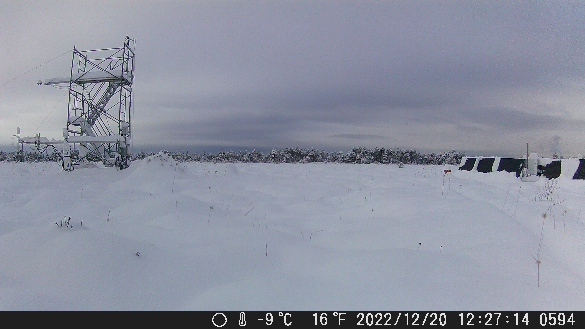
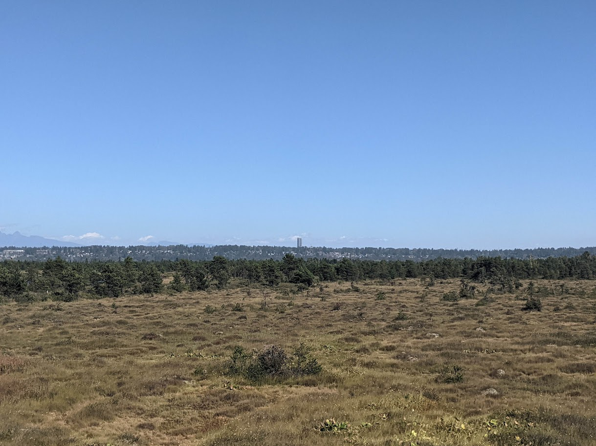
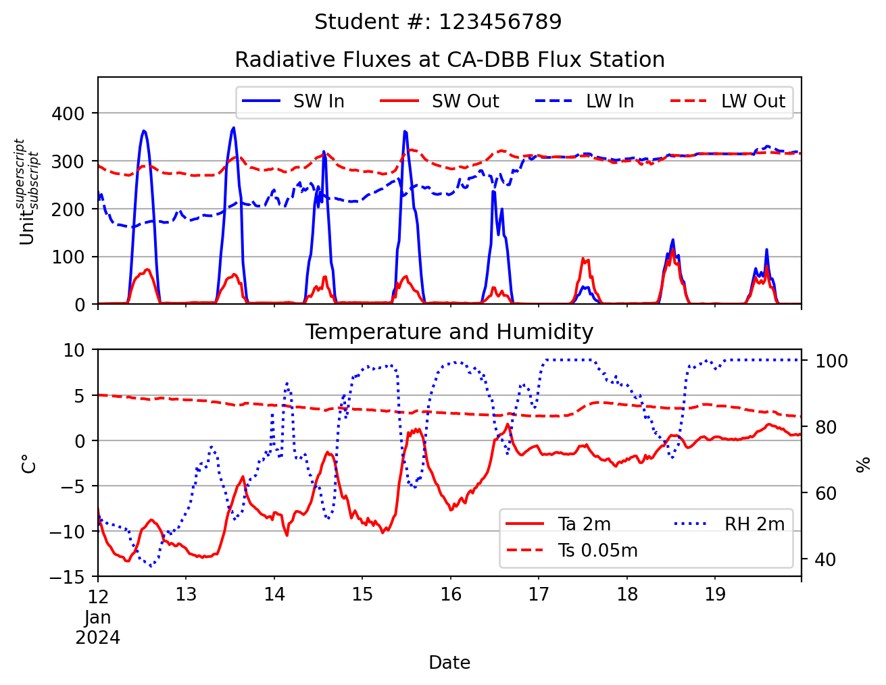
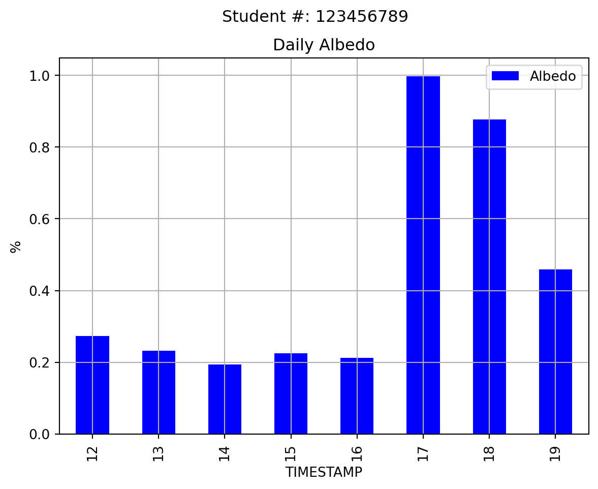

| SW_IN_1_1_1 | LW_IN_1_1_1 | SW_OUT_1_1_1 | LW_OUT_1_1_1 | H | G_1 | TA_1_1_1 | TA_1_2_1 | TS_1 | TS_2 | TS_3 | RH_1_1_1 | P_1_1_1 | PA_1_1_1 | WS_1_1_1 | WD_1_1_1 | VPD_1_1_1 | HOUR | DOY | |
|---|---|---|---|---|---|---|---|---|---|---|---|---|---|---|---|---|---|---|---|
| TIMESTAMP | |||||||||||||||||||
| 2022-01-01 00:30:00 | 0.059775 | 263.22790 | 1.358248 | 271.21440 | -29.676018 | -5.586875 | -7.762711 | -9.570630 | 3.630083 | 4.214648 | 7.489783 | 83.282550 | 0.0 | 102.397125 | 0.659737 | 0.659737 | 0.572898 | 0 | 1 |
| 2022-01-01 01:00:00 | 0.019907 | 265.93750 | 1.101564 | 274.97858 | NaN | -5.553178 | -7.200051 | -9.533210 | 3.677612 | 4.251830 | 7.531122 | 82.645550 | 0.0 | 102.403420 | 1.401023 | 1.401023 | 0.621187 | 1 | 1 |
| 2022-01-01 01:30:00 | 0.102981 | 268.36322 | 0.614629 | 279.22833 | NaN | -5.575220 | -6.349798 | -7.833451 | 3.669683 | 4.264247 | 7.550878 | 79.349396 | 0.0 | 102.417690 | 1.692178 | 1.692178 | 0.789111 | 1 | 1 |
| 2022-01-01 02:00:00 | 0.025781 | 273.88068 | 0.394172 | 281.60062 | NaN | -5.574099 | -6.297862 | -7.050872 | 3.692943 | 4.280375 | 7.569431 | 79.832660 | 0.0 | 102.448500 | 1.855905 | 1.855905 | 0.773717 | 2 | 1 |
| 2022-01-01 02:30:00 | 0.032684 | 277.71097 | 0.381383 | 283.53964 | NaN | -5.562795 | -6.020581 | -6.729948 | 3.708760 | 4.293371 | 7.578785 | 79.850450 | 0.0 | 102.461420 | 2.013627 | 2.013627 | 0.789605 | 2 | 1 |
Assignment 1
GEOS 300, 2024
Python and R code templates be found here to help get you started.
Instructions
It is strongly recommended that you complete the assignment in Python or R, although you can complete it in excel/numbers if necessary. They will download the data for you and get you started with a few blocks of code to make plots and tables. If you are electing to complete the lab in excel, you can find all the relevant data files here here. Note these data are in .csv format. If you plan to work in excel, you should save a copy of the data in a suitable excel format (e.g., .xlsx) before making any charts or doing any calculations.
Please upload your answers including all calculations, discussions, tables, and graphs in a single document (PDF or HTML file). Note that you can download your .ipynb file under ‘File \(\gg\) Download as \(\gg\) HTLM or PDF via Latex’ and submit this as your report. Label the report document with your name and your student number. Upload your answers to Canvas. Do not attach a spreadsheet.
Make Sure your student number is include on each plot you produce, and that each plot is using the correct units.
CA DBB Flux Station
In this lab, assignment, you’re going to look at data from the CA-DBB (aka “BB”) Eddy Covariance (EC) Station located in Delta, BC. On the assignment data page you can find a Climate_Summary_BB.csv with data from the CA-DBB station along with two metadata files, one describing the climate data and another describing the station. Reviewing the metadata is an important first step of any project.
Figure 1 shows some pictures of the site from different perspectives. Figure 2 shows an interactive web map with high resolution satellite imagery. Clicking on “BB” in will zoom to the CA-DBB station and show the site’s “Flux Footprint Climatology”, which is a concept we’ll cover later in term. For now, we’ll stick to looking at some basic components of the site’s energy balance. Clicking the “BB” button again will toggle the footprint later on and off. You can pan/zoom to get a feel for what the site looks like.




Question 1
Below is an example showing the first few rows of the BB climate summary data. What values do you see listed for Incoming and outgoing \(SW\) in the first row of the table, are these values reasonable? Why or why not?
- Make suer to specify the units in your answer. Check the metadata provided here to make sure you understand the variable names and units.
Question 2
We’re going to be looking at some data from the January 2024 cold-snap (Jan 12 to Jan 19) and snowstorm (Jan 17-Jan 19) during which record low temperatures were observed and over 25cm of snow was received across the Metro Vancouver area. The table below shows some descriptive statistics for key variables during this time period. What was the range of air temperatures observed over this time period? How does it compare to the range of soil temperatures observed?
| DOY | HOUR | SW_IN_1_1_1 | LW_IN_1_1_1 | SW_OUT_1_1_1 | LW_OUT_1_1_1 | TA_1_1_1 | TS_1 | RH_1_1_1 | |
|---|---|---|---|---|---|---|---|---|---|
| count | 384.000 | 384.000 | 384.000 | 384.000 | 384.000 | 384.000 | 384.000 | 384.000 | 384.000 |
| mean | 15.500 | 11.500 | 45.256 | 255.759 | 14.706 | 296.752 | -4.576 | 3.597 | 80.749 |
| std | 2.294 | 6.931 | 89.789 | 51.854 | 23.028 | 15.939 | 4.571 | 0.625 | 19.244 |
| min | 12.000 | 0.000 | 0.000 | 161.566 | 0.000 | 269.093 | -13.297 | 2.607 | 37.666 |
| 25% | 13.750 | 5.750 | 0.000 | 215.101 | 1.267 | 282.230 | -8.566 | 3.086 | 65.421 |
| 50% | 15.500 | 11.500 | 0.027 | 249.904 | 2.698 | 299.117 | -2.880 | 3.555 | 88.566 |
| 75% | 17.250 | 17.250 | 40.290 | 308.048 | 18.668 | 310.924 | -0.607 | 3.979 | 98.252 |
| max | 19.000 | 23.000 | 369.341 | 330.495 | 114.190 | 323.107 | 1.805 | 4.984 | 100.000 |
Question 3
The plot below shows traces of the four radiation component, air & soil temperature, and relative humidity are. Looking at the plot, what stands out to you? Comment on the progression of each radiative component over time, using the temperature and humidity data to support your discussion and help explain any patterns you might see. Do you see any issues in the data? If so, what is a possible explanation?

Question 4
The plot below shows mean daily albedo. What explains sharp increase on the 17th?

Question 5
The maximum half-hourly \(SW_\downarrow\) observed during this time period occurred between 12:30 and 13:00 on January 13th. Using the equations from lecture, calculate the Local Apparent Time (LAT), solar declination \(\delta\), solar zenith angle \(Z\), and extraterrestrial irradiance \(I_{ex}\) for the center point of this observation period (12:45). Given the value of \(I_{ex}\), compared to observed \(SW_\downarrow\), what is the approximate bulk transmissivity (\(\Psi_a\)) coefficient of the atmosphere over CA-DBB at this point in time? Given the value of \(I_{ex}\), compared to observed \(SW_\downarrow\), what is the approximate bulk transmissivity (\(\Psi_a\)) coefficient of the atmosphere over CA-DBB at this point in time?
Note: you can find the site’s Lat/Lon and time zone info in the CA-DBB station metadata file.
Question 6
Now calculate \(\Psi_a\) for 12:45 January 19; the observed value of \(SW_\downarrow\) was between 12:30 and 13:00 was 58.375 W\(^m{-2}\). What explains the difference between these two days?
Question 7
Using the examples above as a template, calculate \(R_n\) over the cold-snap. Make a scatter plot showing \(R_n\) on the y-axis and \(SW_\downarrow\) on the x-axis. Describe the relationship you.
Question 8
Using the examples above as a template, create a new selection to see how typical summertime conditions compare to severe winter time conditions. Change the selection period so that it spans July 12th to July 19th, 2023. Provide summary statistics of the same variables as those shown above and produce plots like the ones shown above as well. Discuss how each of these variables during this mid-summer period compare to those from the cold-snap period.
Question 9
Find the timestamp of the observation interval when maximum \(SW_\downarrow\) was observed for the mid-summer period. You will use observations from this timestamp to answer each of the questions below. Note our sites do not use daylight savings, so the UTC offset is fixed all year. Use this information to calculate \(I_{ex}\) and \(\Psi_a\) for the mid-point of this observation period. Discus how these two values compare between this observation, and the observation spanning between 12:30 and 13:00 on January 13th of 2024. How does the magnitude differ and why does the relative timing of the maximum daily \(SW_\downarrow\) differ?
Question 10
Approximately 42% of the energy in the short-wave is within the PAR band (Photosynthetically active radiation that can be used by plants to perform photosynthesis). Based on this assumption, calculate the energy available to plants (also called: photosynthetic photon flux density, PPFD) at noon in \(\mu \rm{mol}\, \rm{m}^{-2}\,\rm{s}^{-1}\). You can use the wavelength of yellow light (\(\lambda 0.55 \mu m\)) for your estimate. Hint: Consult examples in reading package for radiation geometry.
Question 11
Let’s assume the surface emissivity at CA-DBB is \(\epsilon = 0.95\). Using this assumption and the Stephan Boltzman law for grey bodies, estimate temperature of the land surface at CA-DBB for the time period identified above in question 9.
Question 12
Now use the same equation to estimate the “apparent” radiative sky temperature (\(T_k\)) from \(LW_{\downarrow}\) for this timestamp. “Apparent” means you should assume \(\epsilon{a} = 1.0\). How would you interpret \(T_k\)?
Question 13
Using measured \(LW_{\downarrow}\) and measured air temperature \(T_a\), calculate the actual bulk emissivity of the atmosphere \(\varepsilon_{a}\) at noon? [2]
Question 14
Using the Prata (1996) equation from lecture and measured \(T_a\) and \(RH\), what is the calculated apparent emissivity of the atmosphere and the calculated estimate of \(LW_{\downarrow}\)? How well do these approximations match with what we actually observed?